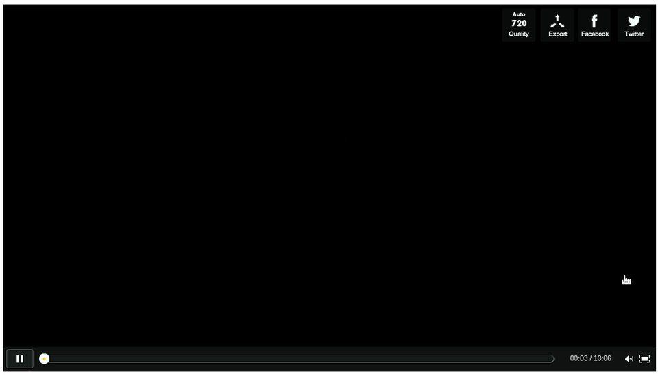
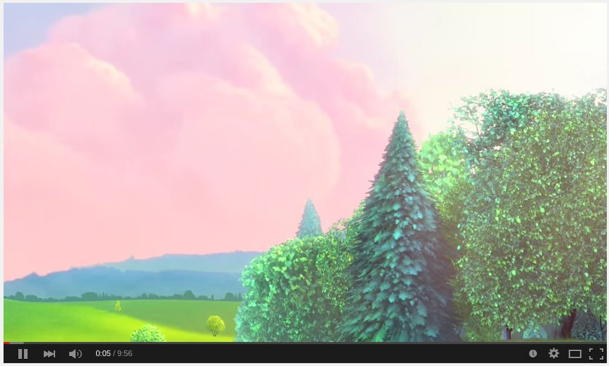
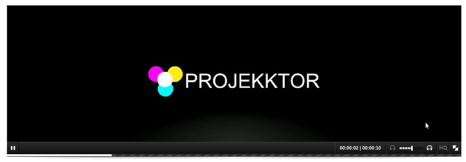
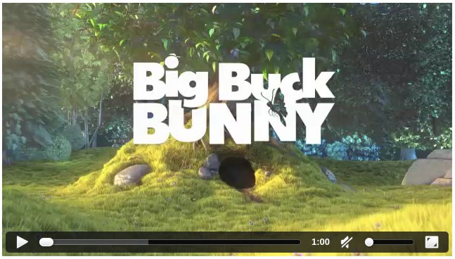

Le HTML5 a apporté son lot de nouveautés, notamment au niveau du contenu multimédia. En effet, avant, il était bien souvent nécessaire de faire appel à des conteneurs lourds comme Flash. Dorénavant, des balises dédiées à ces usages ont été introduites :
-
<video>pour les contenus audio ET vidéo ; -
<audio>pour les contenus audio uniquement.
Dans ce tutoriel, nous allons découvrir comment utiliser ces deux balises. Nous verrons tout d’abord une approche simple de ces dernières, puis nous étudierons comment rendre les choses plus intéressantes en essayant de créer notre propre lecteur multimédia en HTML5.
Afin de bien suivre ce tutoriel, de (petites) bases en HTML sont nécessaires ainsi qu’un peu de JavaScript.
La balise
<audio>
ayant un comportement très proche de celle de la vidéo (à quelques fonctions près), je me concentrerai davantage sur cette dernière.
A la fin de ce tutoriel, vous serez en mesure de réaliser votre propre lecteur multimédia HTML5. Voici quelques exemples :




Sommaire
Les balises audio et vidéo
Les balises audio et vidéo
Comme vous le savez, en HTML, tout élément est représenté par une balise.
audio
et
video
ne feront pas exception.
Ces éléments sont de type block et sont écrits de la manière suivante :
<audio>
<!-- Des informations sur la piste audio -->
</audio>
<video>
<!-- Des informations sur la vidéo -->
</video>
Les éléments importants de ces balises
Bien que leurs buts soient différents, ces deux balises sont très similaires dans leur comportement. Finalement, la seule différence entre un contenu audio et vidéo est que le second peut inclure le premier (mais pas nécessairement). Dans un cas comme dans l’autre, on souhaite lire une piste et afficher une interface à l’utilisateur pour interagir avec cette dernière.
Cela nous amène donc au premier attribut indispensable de ces deux balises : la source .
La source
Savoir afficher une balise audio/vidéo c’est bien, mais si on ne lui donne rien à afficher, on n’est pas plus avancé ! Il va donc falloir donner une source à afficher. Tout comme pour une image, elle peut être relative ou absolue. Il existe deux moyens pour la spécifier.
Via l’attribut
src
Là encore, comme pour une image, il suffit de spécifier l’attribut
src
pour donner un lien vers la vidéo ou le flux audio à lire.
<video src="http://masource.com/lavideo.avi">
</video>
Via la balise
<source>
Cependant, il peut être intéressant de proposer plusieurs formats à l’utilisateur. En effet, tous les navigateurs ne savent pas lire tous les formats vidéo. On propose donc la même vidéo dans des formats différents et le navigateur choisira ! Pour cela, on utilise la balise
<source>
dans
la balise audio/vidéo.
<video>
<source src="chemin/vers/masource.mp4" type="video/mp4">
<source src="chemin/vers/masource.ogg" type="video/ogg">
<source src="chemin/vers/masource.webm" type="video/webm">
</video>
Voici une petite démonstration 1 de ce dernier cas :
Mais c’est pourri, on peut pas lancer la vidéo ! Ça marche pas !
En fait si, tout marche très bien, c’est juste que maintenant que nous avons la vidéo, il va falloir la contrôler…
Contrôler (simplement) le média
Maintenant que la vidéo est présente, ajoutons un peu d’interactivité à cette dernière…
Les options « natives »
Les balises multimédia possèdent par défaut quelques attributs bien pratiques. En effet, voici une liste non exhaustive de celles que j’estime être les plus utiles dans l’immédiat :
-
controls: permet de rajouter des boutons de contrôle de lecture standards (lecture/pause, barre de progression, plein-écran…) ; -
autoplay: (plutôt évident…) la lecture est lancée automatiquement dès que la vidéo commence à se charger ; n’en abusez pas, cela peut être assez gênant pour la navigation ; -
poster* : lien vers une image d’illustration si la vidéo n’est pas disponible à l’adresse spécifiée ; -
loop: relance la lecture quand cette dernière est terminée, encore et encore ; -
heightetwidth* : pour spécifier une hauteur et une largeur au lecteur ; -
muted: coupe le son.
* ne s’applique pas à la balise audio
Voici par exemple une vidéo avec des contrôles, dont le son est coupé, qui jouera en boucle et dont la taille a été limitée à 320x240 pixels.
<video width="320" height="240" controls muted loop>
<source src="chemin/vers/masource.mp4" type="video/mp4">
<source src="chemin/vers/masource.ogg" type="video/ogg">
<source src="chemin/vers/masource.webm" type="video/webm">
</video>
Vous savez maintenant afficher une vidéo ou jouer un son !
Encore plus loin, des sous-titres pour les vidéos
Dans notre monde moderne et international, il arrive que les sous-titres puissent être nécessaires pour offrir le contenu à un plus grand public. Et c’est là que la balise
<track>
intervient. Placée dans une balise vidéo, cette dernière proposera des sous-titres au lecteur.
La balise track a besoin des informations suivantes :
-
src: la source (relative ou absolue) du fichier de sous-titres (au format WebVTT .vtt (WEB Video Text Track)) ; -
kind="subtitles": pour préciser que l’on parle de sous-titres ; -
srclang: le code international de la langue (en, de, fr…) ; -
label: le nom littéral de la piste de sous-titres.
Par exemple :
<video controls>
<source src="ma-super-video.mp4" type="video/mp4">
<source src="ma-super-video.ogg" type="video/ogg">
<track src="subtitles_en.vtt" kind="subtitles" srclang="en" label="English">
<track src="subtitles_fr.vtt" kind="subtitles" srclang="fr" label="Francais">
</video>
À l’heure d’écriture de ce tutoriel, cette balise est encore très peu supportée dans les navigateurs.
Fallback
Si l’utilisateur qui visite votre site possède un navigateur un peu rétro ou incomplet vis-à-vis des standards du Web, il serait de bon ton de l’avertir que le contenu ne peut être affiché plutôt que de le laisser attendre indéfiniment un média qui n’arrivera jamais.
Pour cela, il suffit tout simplement d’ajouter du HTML dans la balise média concernée. Si le navigateur ne sait pas interpréter la balise vidéo/audio, alors il ignorera les balises et affichera notre fallback . Sinon ce contenu est ignoré car la balise est correctement interprétée.
<video>
<!-- Une source quelconque -->
<source src="…">
<!-- Ce paragraphe ne s'affichera que dans le cas où le navigateur
ne sait pas interpréter la balise vidéo -->
<p class="alert">
Votre navigateur ne supporte pas la balise vidéo ! Mettez-vous à jour !
</p>
</video>
Plutôt que d’afficher du texte, vous pouvez très bien aussi afficher un conteneur Flash en solution de secours pour jouer la vidéo. L’idéal est même de proposer une alternative ET les liens de téléchargement de la vidéo, si la licence de distribution de cette dernière le permet.
Interagir un peu plus avec les médias
Lorsque l’on a un média, on peut avoir envie d’interagir un peu plus avec que simplement afficher les contrôles de base. Nous ferons alors appel à JavaScript pour rentrer dans les entrailles du lecteur…
Imaginons que nous voulions proposer un lecteur sans contrôles natifs, mais uniquement avec nos boutons HTML que nous pourrions styliser via du CSS. Il faudrait alors que ces boutons interagissent avec la vidéo correctement. Admettons que nous voulions ajouter les contrôles suivants :
-
Lecture: lit la vidéo ; -
Pause: met la vidéo en pause ; -
Stop: arrête la vidéo ; -
-10s: recule la vidéo de 10 secondes ; -
+10s: avance la vidéo de 10 secondes ;
Structure de base
Voici la structure de base que nous allons respecter :
<video id="mavideo" controls>
<source src="http://clips.vorwaerts-gmbh.de/VfE_html5.mp4" type="video/mp4">
<source src="http://clips.vorwaerts-gmbh.de/VfE.webm" type="video/webm">
<source src="http://clips.vorwaerts-gmbh.de/VfE.ogv" type="video/ogg">
<p class="alert">
Votre navigateur ne supporte pas la balise vidéo ! Mettez-vous à jour !
</p>
</video>
<div class="controles" hidden>
</div>
function lecture() {
// Lit la vidéo
}
function pause() {
// Met la vidéo en pause
}
function stop() {
// Arrête la vidéo
}
function avancer(duree) {
// Avance de 'duree' secondes
}
function reculer(duree) {
// Recule de 'duree' secondes
}
function creerBoutons() {
// Crée les boutons de gestion du lecteur
}
Mettre nos contrôleurs
Comme vous pouvez le voir dans le squelette précédent, pour l’instant, aucun bouton personnalisé n’est présent sur notre page et la vidéo possède l’interface par défaut. En effet, nous allons créer les boutons dynamiquement en JavaScript dans la fonction
creerBoutons()
qui sera exécutée à la fin du chargement de la page. De cette manière, un utilisateur désactivant le JavaScript pourra tout de même utiliser le navigateur avec l’interface standard.
Voici comment nous allons créer nos boutons. Je compte sur vous pour comprendre sans explication, juste avec les commentaires !

var lecteur;
function creerBoutons() {
// Crée les boutons de gestion du lecteur
var btnLecture = document.createElement("button");
var btnPause = document.createElement("button");
var btnStop = document.createElement("button");
var btnReculer = document.createElement("button");
var btnAvancer = document.createElement("button");
var controlesBox = document.getElementById("controles");
lecteur = document.getElementById("mavideo");
// Ajoute un peu de texte
btnLecture.textContent = "Lecture";
btnPause.textContent = "Pause";
btnStop.textContent = "Stop";
btnReculer.textContent = "-10s";
btnAvancer.textContent = "+10s";
// Ajoute les boutons à l'interface
controlesBox.appendChild(btnLecture);
controlesBox.appendChild(btnPause);
controlesBox.appendChild(btnStop);
controlesBox.appendChild(btnReculer);
controlesBox.appendChild(btnAvancer);
// Lie les fonctions aux boutons
btnLecture.addEventListener("click", lecture, false);
btnPause.addEventListener("click", pause, false);
btnStop.addEventListener("click", stop, false);
btnReculer.addEventListener("click", function(){reculer(10)}, false);
btnAvancer.addEventListener("click", function(){avancer(10)}, false);
// Affiche les nouveaux boutons et supprime l'interface originale
controlesBox.removeAttribute("hidden");
lecteur.removeAttribute("controls");
}
// Crée les boutons lorsque le DOM est chargé
document.addEventListener('DOMContentLoaded', creerBoutons, false);
Interagir avec la vidéo
Maintenant que nous avons un squelette, nous allons devoir faire appel aux propriétés de l’objet vidéo pour interagir avec (son id est « mavideo »). Pour cela, on ira chercher dans la référence de l’élément : HTMLMediaElement . Vous y trouverez les attributs accessibles (dont certains ont été vus plus tôt) ainsi que les méthodes que nous pouvons appeler.
Ainsi nous trouverons par exemple les éléments suivants :
-
play(): pour lire la vidéo ; -
pause(): pour la mettre en pause ; -
currentTime: attribut représentant le minutage actuel de la vidéo ( position dans la vidéo).
On va alors pouvoir implémenter les méthodes JavaScript proposées plus tôt !
function lecture() {
// Lit la vidéo
lecteur.play();
}
function pause() {
// Met la vidéo en pause
lecteur.pause();
}
function stop() {
// Arrête la vidéo
// On met en pause
lecteur.pause();
// Et on se remet au départ
lecteur.currentTime = 0;
}
function avancer(duree) {
// Avance de 'duree' secondes
// On parse en entier pour être sûr d'avoir un nombre
lecteur.currentTime += parseInt(duree);
}
function reculer(duree) {
// Recule de 'duree' secondes
// On parse en entier pour être sûr d'avoir un nombre
lecteur.currentTime -= parseInt(duree);
}
TP : Faire votre propre lecteur multimédia
Consigne
En guise d’exercice, je vous propose de continuer l’interface que nous avons commencée en rajoutant les boutons suivants.
Niveau 1
-
Répéter: checkbox qui fera répéter la vidéo lorsqu’elle se termine si elle est cochée ; -
Avancer/Reculer de xx secondes: un input de votre choix pour sélectionner une valeur et deux boutons pour avancer ou reculer.
Niveau 2
Pour les plus forts :
- Une barre de progression pour afficher où la vidéo est rendue dans sa lecture ;
-
Un input de type range pour :
- afficher où la vidéo est rendue ;
- sélectionner un endroit où aller.
Niveau 3
Prouvez que vous être le maître des technos Web, rajoutez une belle couche de CSS par dessus tout cela !
Voila, ça fera de quoi vous occuper
 !
!
BON COURAGE
Solution
Voici un exemple simple de solution « Niveau 1 » :
Et voila une deuxième démo mettant plus l’accent sur le style que sur les fonctions.
S’il est encore nécessaire de montrer l’intérêt des balises modernes du HTML5, sachez par exemple que YouTube, le célèbre hébergeur de vidéos, a décidé d’arrêter complètement l’utilisation de Flash pour ses contenus. En effet, maintenant, toutes les vidéos passent par l’utilisation… de la balise
<video>
!
Un gros merci à Dominus Carnufex pour avoir pris le temps et le courage de venir relire et corriger toutes mes monstrueuses fautes ! Merci aussi à viki53 pour ses conseils sur le JavaScript et ses idées.
-
Les vidéos d’exemple sont celles du film Big Buck Bunny , un film sous licence Creative Commons.
↩